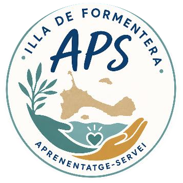
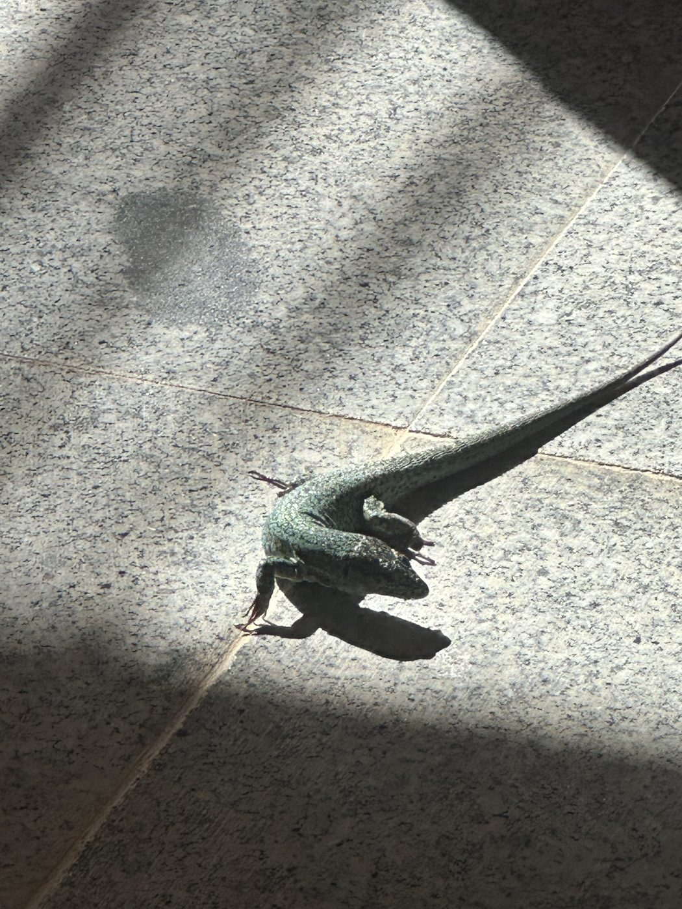
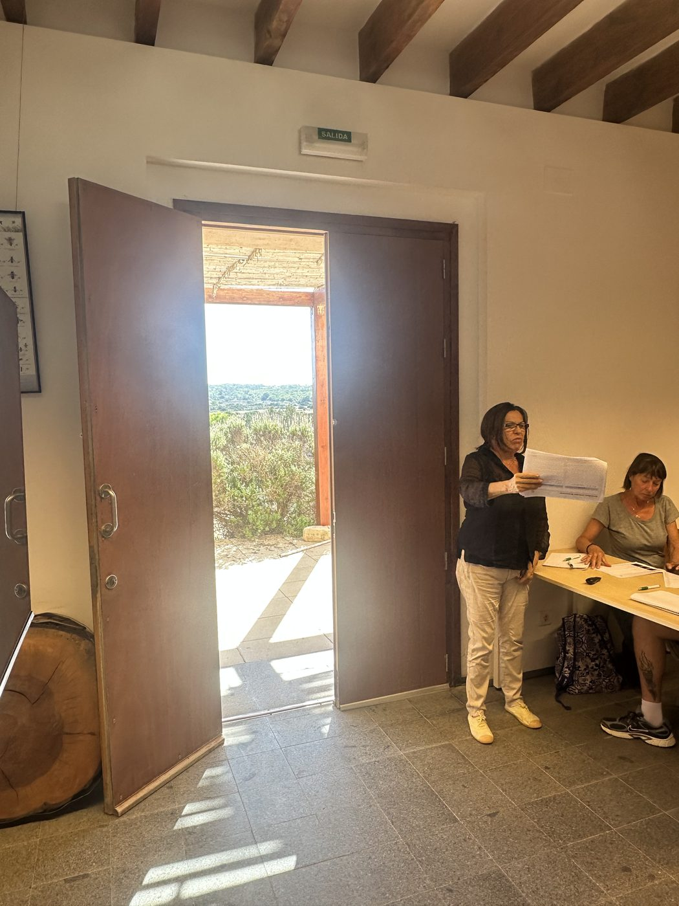

Aprenentatge servei a l’illa de Formentera
Curs 2026-2027
L’alumnat aprèn el que toca del currículum fent una feina que algú de l’illa necessita de veritat. Aquest curs hi participen tres centres: el CEIP Sant Ferran de ses Roques, el CEIP Mestre Lluís Andreu i el Col·legi Virgen Milagrosa, amb el Parc Natural de ses Salines d’Eivissa i Formentera i els centres per a majors de l’illa.

Què és, en tres idees
El programa en un minut
La jornada d’inici
Dilluns 26 d’octubre, al Centre d’Interpretació de Can Marroig, els equips dels tres centres començaren el curs amb Carme Frau Lladó, formadora experta en aprenentatge servei, i amb una visita guiada pel Parc Natural amb l’equip d’educació ambiental.





Fotografies publicades amb el permís de les persones que hi apareixen.
El que ens emportam
- Primer, la necessitatEl servei i els continguts arriben després. No es forcen al principi del projecte.
- Poques trobades, ben aprofitadesPoques sessions de tots els centres durant el curs, en llocs agradables que no siguin de cap centre.
- Tot el centre a bordLes direccions i les caps d’estudis, dins el projecte des del primer dia.
- Acompanyar és escoltarQui acompanya escolta i conta experiències viscudes, no teoria.
El recorregut del curs
Tots els centres segueixen el mateix camí: visites a cada centre per acompanyar el projecte de prop i trobades de tots els centres per compartir-lo.
Novembre
Visita a cada centre
El CEP proposa dates i cada centre tria la que li va millor.
Desembre
Primera trobada de tots els centres, presencial
Les emocions i l’entorn, la necessitat que ha detectat cada centre i les entitats amb què es pot fer feina.
Gener
Visita a cada centre
El servei: què farà l’alumnat i per a qui.
Març
Segona trobada de tots els centres
Posada en comú dels serveis, concreció de la celebració i avaluació del projecte.
Final d’abril
Celebració i difusió
Els centres mostren a l’illa el servei que han fet.
Dates, llocs i horaris es coordinen amb els equips de cada centre i es publiquen aquí a mesura que es concreten.
Les formacions de cada centre
Cada centre té la seva formació, de 30 hores. A la fitxa hi ha els continguts, els objectius i com es certifica.
Per llegir abans de començar
La guia breu explica què és l’aprenentatge servei, què no és i com es reconeix un projecte ben fet. El tríptic resumeix el programa d’aquest curs.
Programa d’experiència formativa del CEP de Formentera amb el Servei de Formació Permanent del Professorat. Línia estratègica 8, Entorn i sostenibilitat, del Pla quadriennal de formació permanent del professorat 2024-2028 (BOIB núm. 119, de 10/09/2024). Informació: cep@cepformentera.cat.